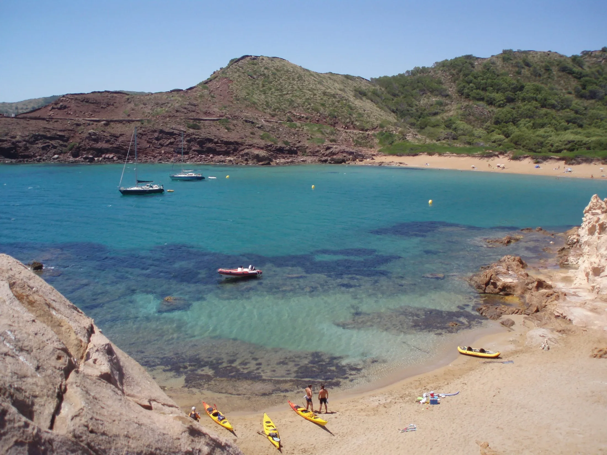
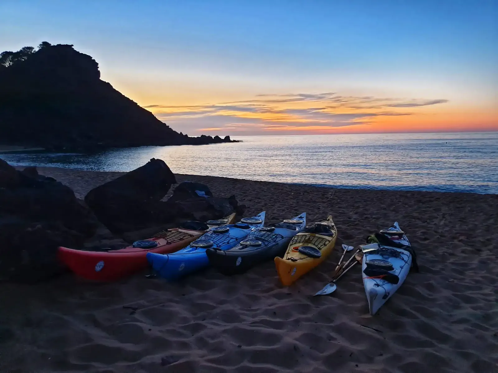

Cala Torret · Binibeca · Menorca
Menorca, desde el agua.
Excursiones en kayak y paddle surf, barcas con y sin licencia, bicis y la vuelta a la isla en kayak. Todo desde nuestra base en Cala Torret.
Elige tu plan.
Una base, toda la isla.
Salimos desde Cala Torret, en la costa sur. Algunas excursiones parten de Addaia, al norte, y la vuelta a Menorca rodea toda la isla.
Tu barca, con o sin licencia.
Sin licencia, con titulación náutica o con patrón: elige cómo quieres descubrir las calas del sur.
Sal por tu cuenta, a tu ritmo.
Kayaks, tablas de paddle surf y bicicletas. Precios claros, sin sorpresas.

Dormir en calas vírgenes, llegar remando.
Rutas de varios días en kayak de travesía: con guía, comida y logística incluidas, o por tu cuenta con todo el material.
Reservar es fácil.
Actividad, día, horario y número de personas.
La solicitud nos llega por WhatsApp con todos los datos.
Te respondemos con la disponibilidad y cómo pagar.
Ven a Cala Torret 15 minutos antes. Nosotros ponemos el material.
Lo que nos preguntáis siempre.
Empresas, escuelas y grupos grandes.
Preparamos excursiones de kayak y paddle surf, rutas guiadas de varios días, bicicletas para grupos de más de 10 personas y la escuela de verano. Cuéntanos qué necesitas.